Руководство для Xiaomi AX3000T
Подключение, выборочная маршрутизация, диагностика и восстановление — отдельная инструкция для AX3000T с уже установленными OpenWrt и Podkop.
Здесь описана настроенная сборка из исходного руководства. Это не инструкция по установке OpenWrt на заводскую прошивку Xiaomi. Наличие кнопок, серверов и подписки зависит от установленной сборки.
В исходной сборке заявлены подписка, более 100 серверов и автообновление. Эти параметры не являются свойством самой модели роутера.
Подключение и вход в настройки
- Соедините LAN основного роутера с WAN вашего AX3000T.
- В описанной сборке WAN — крайний левый порт при взгляде на заднюю панель. После подачи питания дождитесь синего индикатора: примерно две минуты.
- Подключите телефон или компьютер к Wi-Fi AX3000T либо к его LAN-порту.

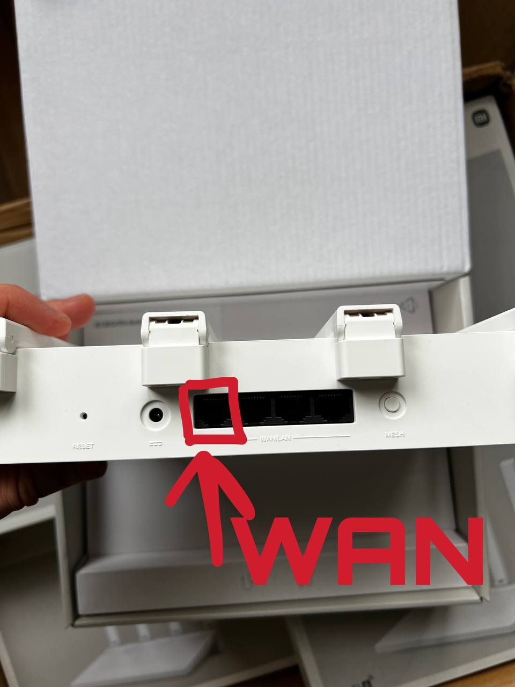
Веб-панель
Откройте 192.168.5.1 или openwrt.lan/cgi-bin/luci/. Для входа используется root; если пароль администратора ещё не установлен, оставьте поле пустым и нажмите Log in. Если вы уже назначали пароль, введите его.
Настройки Podkop находятся в Services → Podkop. Для проверок подключайтесь непосредственно к сети роутера: удалённый доступ к панели может искажать результаты диагностики.
Подписка, сервисы и домены
В выборочном режиме через настроенное соединение идут адреса из правил; остальной трафик использует обычное подключение. Секции позволяют назначать разные подключения разным спискам.
Загрузка подписки
В сборке автора: Subscribe URL → Получить конфигурации → Получить; затем выберите загруженные конфигурации. Сохранение: Save & Apply.

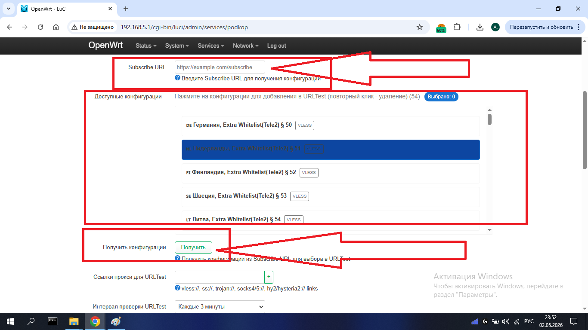
Какие сервисы направлять через VPN
- В Community Lists / Service list выберите нужные готовые наборы. Russia inside объединяет несколько популярных списков.
- Для отдельных адресов используйте пользовательские домены: например,
example.com. - Dynamic List удобен для добавления по одному адресу через «+». Text List — для нескольких адресов, разделённых пробелами, запятыми или переводами строк.
- Нажмите Save & Apply, затем проверьте нужный сервис.
Показать настройки списков и доменов

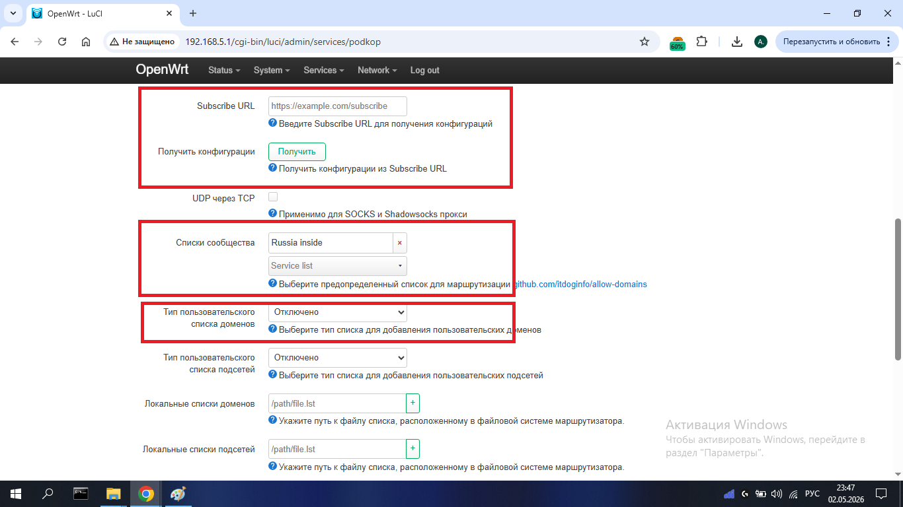

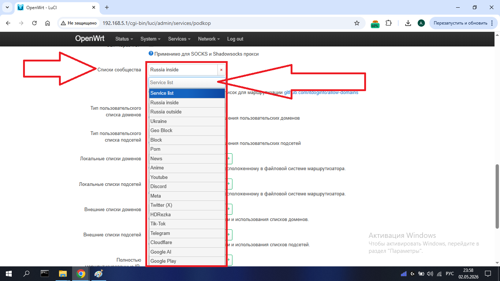

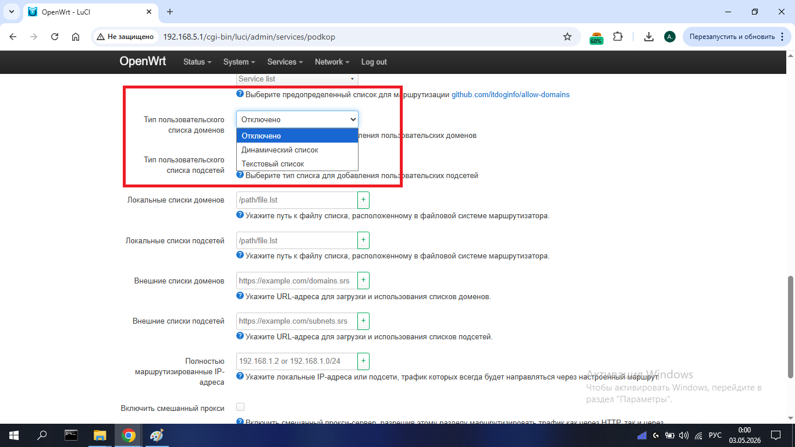

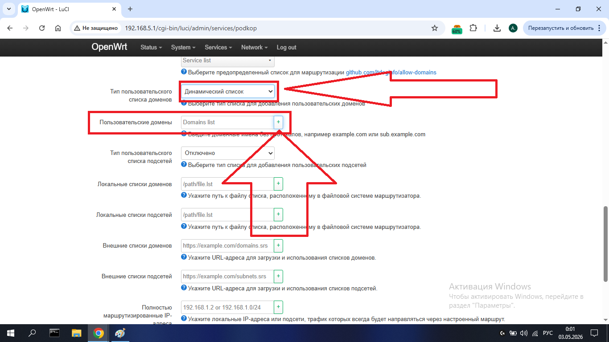

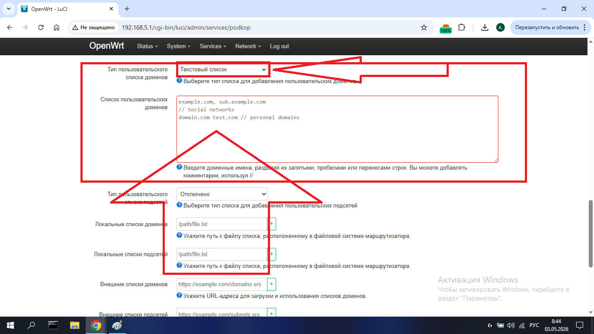

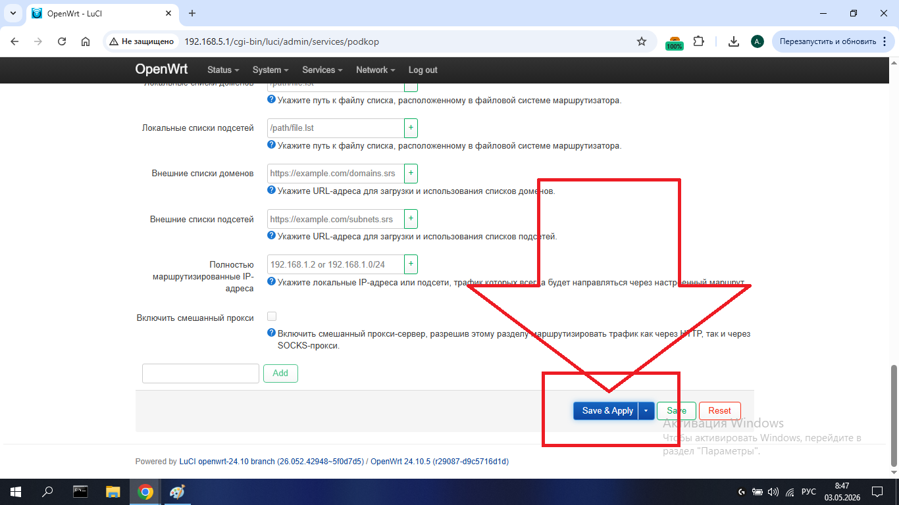
Автоматический и ручной выбор сервера
Откройте Services → Podkop → Дашборд. Здесь отображаются активные соединения, использование памяти, скорость и объём трафика. Кнопка Тестирование задержки проверяет отклик серверов.
Автоматический выбор
В режиме URLTest / Самый быстрый соединения проверяются автоматически. Если текущий сервер станет недоступен, Podkop сможет выбрать другой доступный из списка.
Выбор вручную
Нажмите название нужного сервера на дашборде. Это удобно, когда требуется конкретное подключение, но автоматическое переключение при его отказе больше не гарантируется. Для возврата к автоматике снова выберите Самый быстрый.
Если кэш хранится в оперативной памяти, после перезагрузки может восстановиться автоматический режим. Не считайте показание задержки гарантией скорости загрузки: проверяйте и работу самого сервиса.

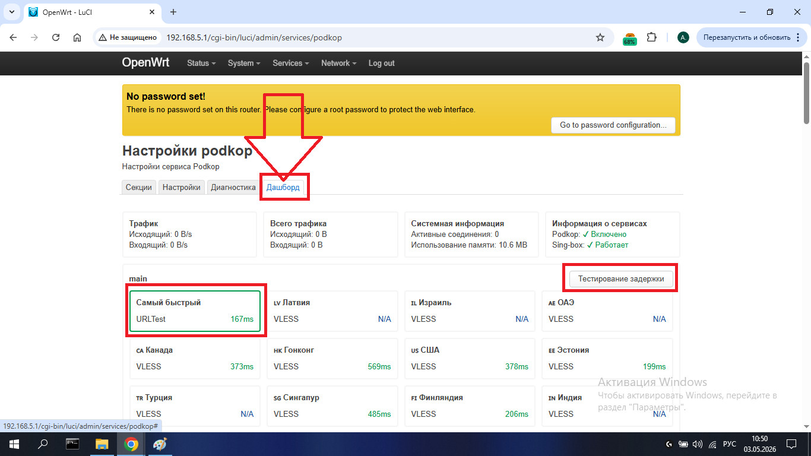

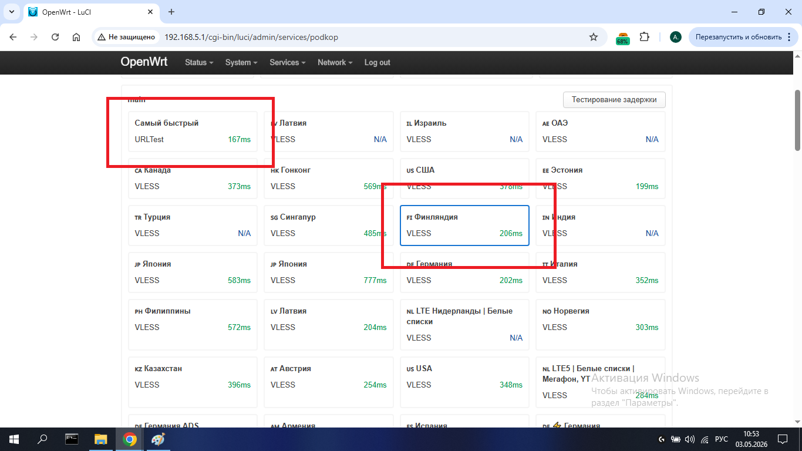
Весь трафик через VPN
Авторская сборка предлагает FullVPN URLTest и FullVPN с ручным сервером: выберите режим, при необходимости сервер, введите oznakomlen, примените настройки и подождите 5–7 минут без перезагрузки.
Банки и госсервисы могут перестать открываться; внешний IP и геолокация будут соответствовать VPN. Используйте режим, только если это ожидаемое поведение.


FullVPN — дополнение этой сборки. В стандартном Podkop основная настройка предназначена для отдельных списков и устройств; отсутствие такого пункта не означает неисправность. Уточните версию сборки перед использованием инструкции.
FullVPN в исходной сборке · режимы маршрутизации в стандартном Podkop.
VPN для одного устройства
Для PlayStation, Xbox, ASIC или другого клиента можно направить весь его трафик в туннель, сохранив обычный режим для остальных устройств.
- Найдите адрес устройства в Status → Overview, в списке DHCP-клиентов.
- Закрепите адрес через Set Static или запись в Network → DHCP and DNS → Static Leases; примените изменения.
- В секции Podkop добавьте этот адрес в Fully Routed IPs / Полностью маршрутизируемые IP-адреса. Если интерфейс предлагает список подключённых клиентов, можно выбрать адрес из него.
- Сохраните изменения и проверьте соединение с выбранного устройства.
Полная маршрутизация затронет и российские сервисы на этом устройстве. Если им нужен прямой доступ, уберите адрес из списка и примените изменения.
Выбор устройства и закрепление IP

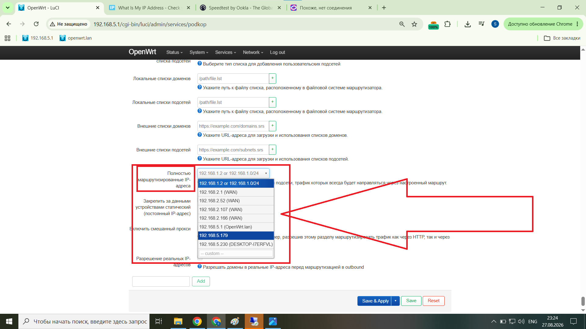

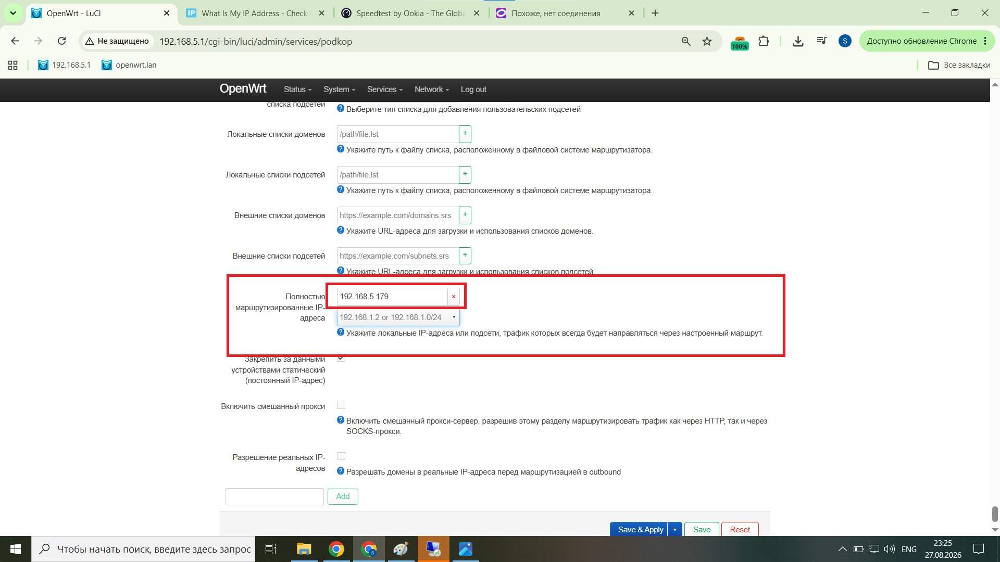

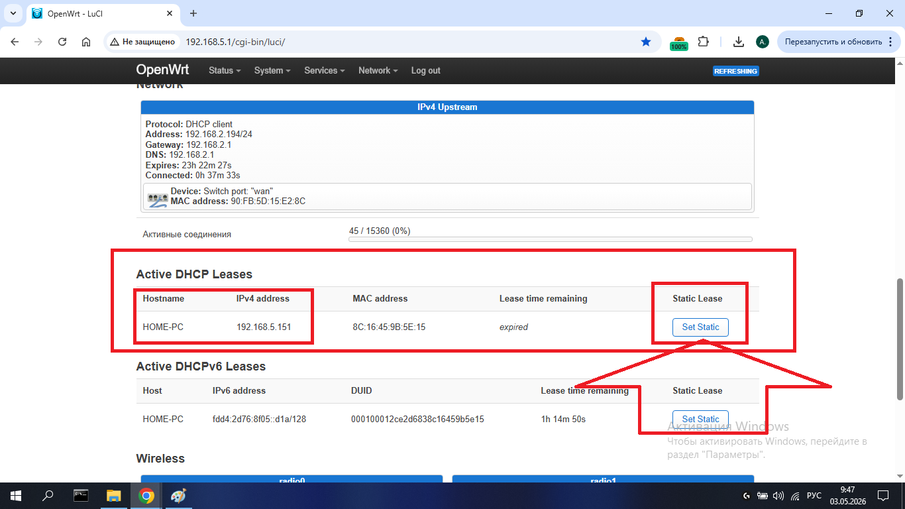

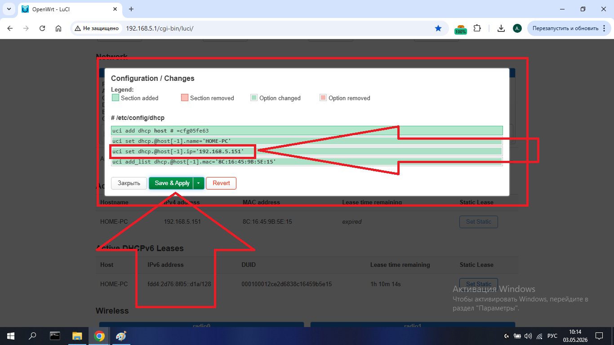

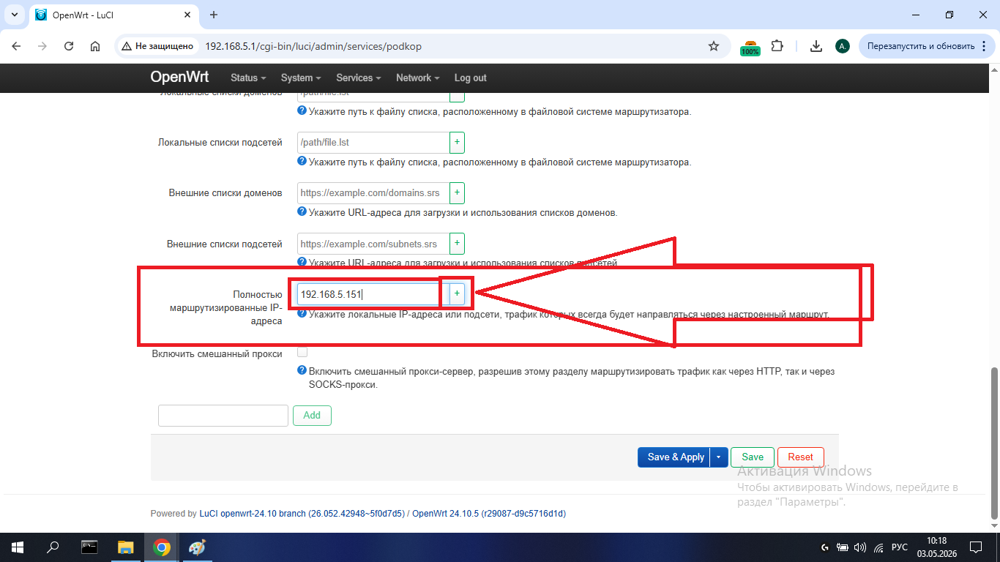

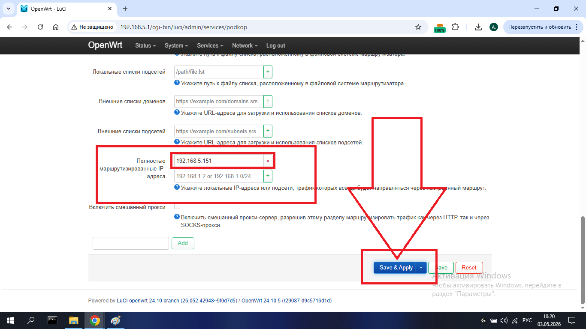
Диагностика и порядок действий
Нет обычного интернета
Проверьте питание, кабели, WAN и соединение у провайдера. Перезапустите роутер. В сборке автора можно отключить автостарт и остановить Podkop; после появления обычного интернета снова включить автостарт и запустить сервис.
Проверка Podkop
Откройте Services → Podkop → Диагностика и запустите проверку. После загрузки устройства дайте службам запуститься, затем повторите тест. Проверяйте строки сверху вниз: сначала DNS, затем sing-box и маршрутизацию. Красный статус требует проверки, жёлтый указывает на предупреждение, зелёный — на успешный тест.

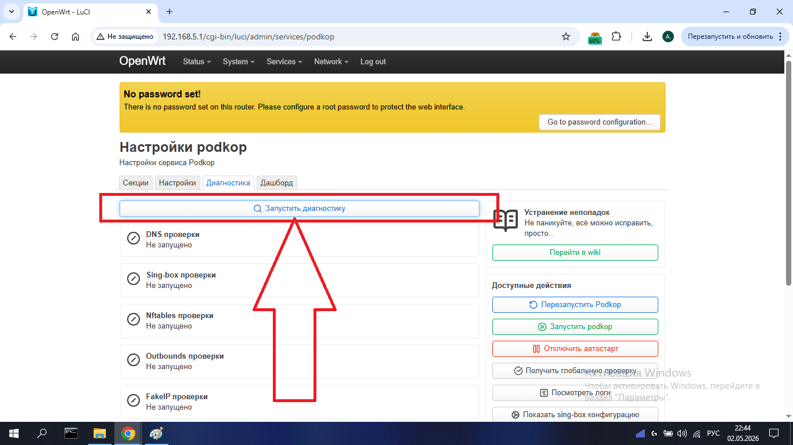

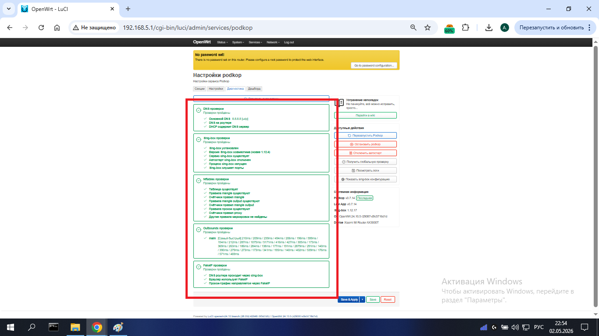
Ошибка маршрутизации через FakeIP
Одна эта строка не доказывает блокировку серверов. Среди возможных причин — неработающее прокси-соединение, внешний DNS браузера, VPN на клиентском устройстве, полная маршрутизация его IP и другие программы обработки трафика. Если интернет и нужные сайты работают, оценивайте результат вместе с фактическим поведением сети.
Проверьте отклик серверов на дашборде. N/A означает отсутствие успешного результата измерения. Попробуйте другое подключение; если рабочие конфигурации закончились, перейдите к обновлению серверов.

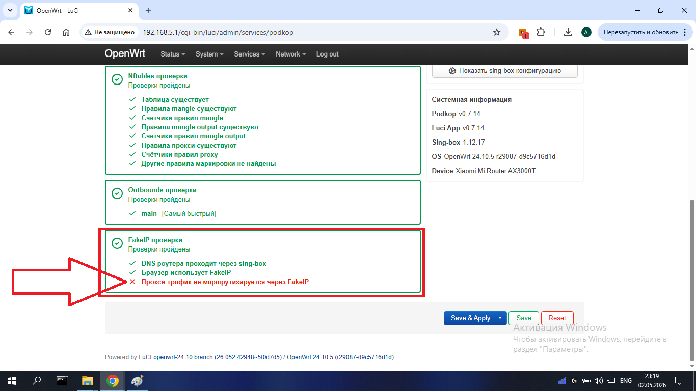

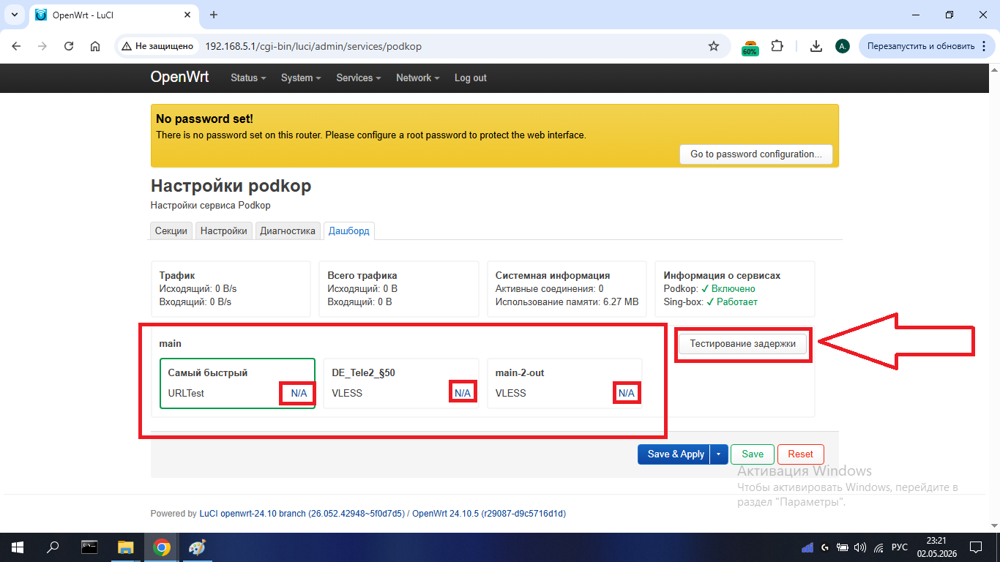
Расшифровка диагностики Podkop · кнопки управления авторской сборки.
FakeIP в браузере и недоступный DNS
Не работает только одно устройство
Проверьте, получает ли оно DNS от роутера. Собственный VPN, ручной DNS, «Защищённый DNS» браузера или Private DNS телефона могут обходить DNS роутера, из-за чего правила по доменам не сработают.
- В Chrome откройте
chrome://settings/security?search=dnsи проверьте настройку защищённого DNS. Для проверки маршрутизации используйте DNS роутера. - В свойствах активного сетевого подключения Windows установите получение DNS автоматически, если ранее задавали сторонний сервер.
- На Android проверьте «Частный DNS»; названия пунктов зависят от производителя.
- Перезапустите браузер и повторите диагностику из сети роутера.

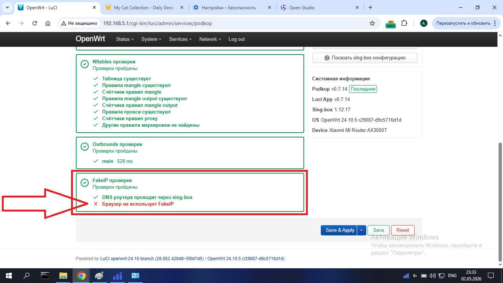
DNS недоступен на роутере
Откройте Podkop → Настройки. Поле DNS Protocol Type выбирает UDP, DoH или DoT; поле DNS Server — сам резолвер. Меняйте один параметр за раз и проверяйте результат после применения.
В исходном примере предложены DoH или замена 8.8.8.8 на 9.9.9.9. Это варианты для проверки, а не гарантия доступности. Официальная документация сейчас также рекомендует учитывать ограничения провайдера и при необходимости использовать его UDP DNS. Для VPN-интерфейса предусмотрен отдельный Domain Resolver.


DNS на устройствах · настройки DNS · особенности доступности DNS.
Обновление серверов
В авторской сборке: Дашборд → Обновить сервера. Альтернативы — бекап AX3000T или приведённый ниже SSH-скрипт автора. Сначала требуется обычный интернет.

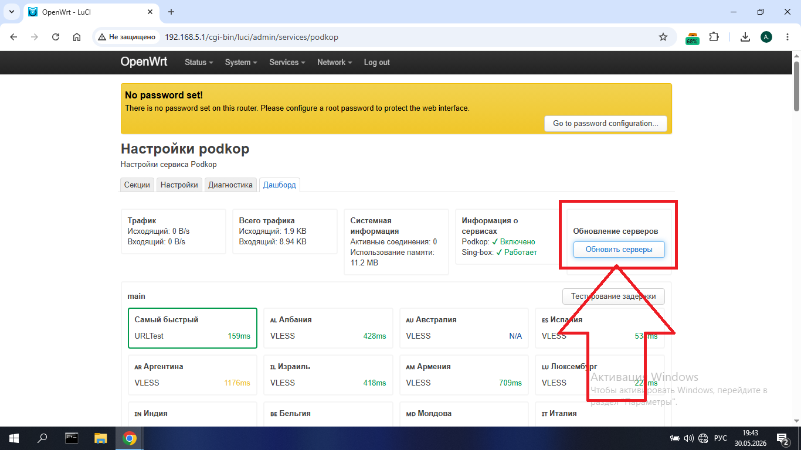

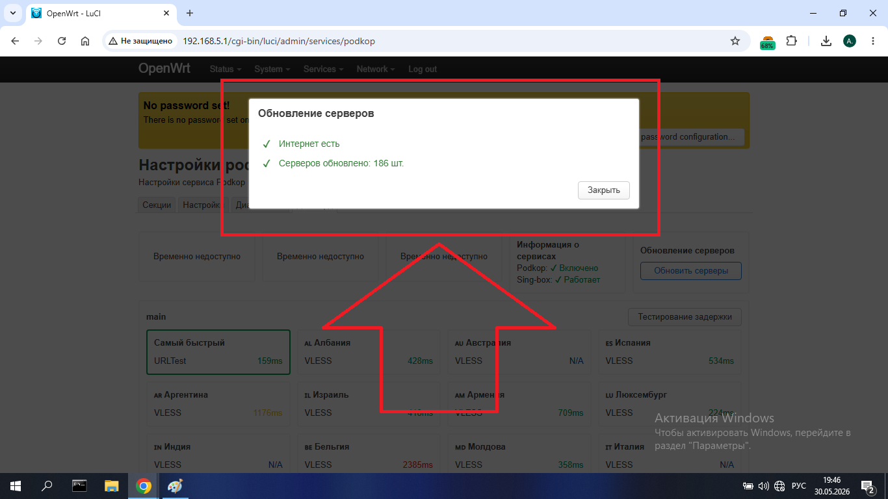

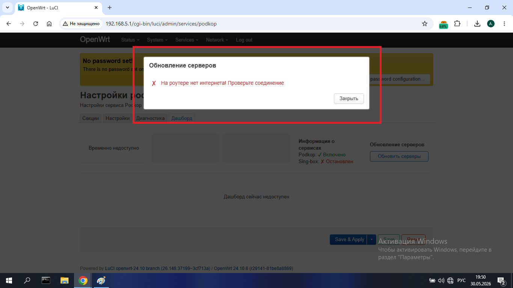
Через SSH
- Откройте PuTTY и соединитесь с
192.168.5.1. - Войдите как
root. Если пароль задан, введите его; в терминале символы пароля не отображаются. - Скопируйте команду и вставьте её в терминал роутера.
wget -qO /tmp/upd.sh https://bit.ly/4290OrT && sh /tmp/upd.sh restart; rm -f /tmp/upd.shЭто ссылка на изменяемый внешний скрипт, который запускается на роутере от root. Здесь приведена команда из источника; её содержимое и совместимость с другой сборкой не проверялись. Установка Zapret-Manager из основного руководства не заменяет эту процедуру.
Бекап для AX3000T
Скачать бекап Xiaomi AX3000T ↗
Ссылка предоставлена автором исходной сборки. Используйте архив только для соответствующей модели и сборки. Восстановление заменяет настройки, включая Wi-Fi и параметры провайдера.
Как восстановить настройки
- Сохраните свою текущую конфигурацию и данные подключения провайдера.
- В панели откройте System → Backup / Flash Firmware.
- Нажмите Upload archive…, выберите скачанный архив через Browse… и нажмите Upload.
- Проверьте показанный список файлов и подтвердите восстановление кнопкой Continue.
- После перезапуска подключитесь заново; адрес панели и параметры Wi-Fi могут измениться на значения из архива.
Архив настроек .tar.gz загружается через восстановление конфигурации. Это другая операция, чем установка образа прошивки. Не выбирайте для такого архива кнопку прошивки нового образа.
Экраны восстановления архива

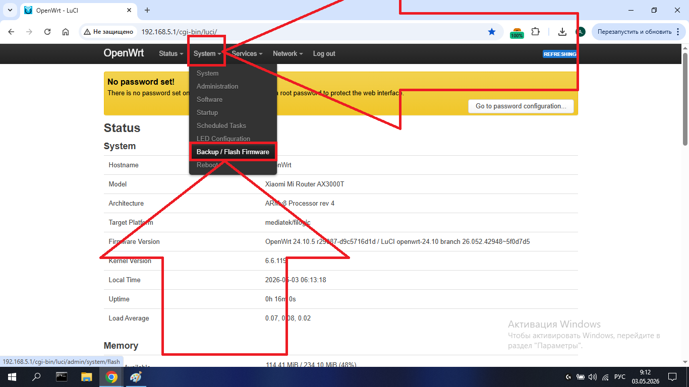

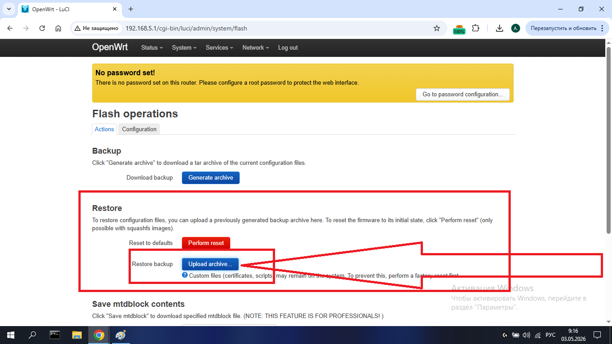

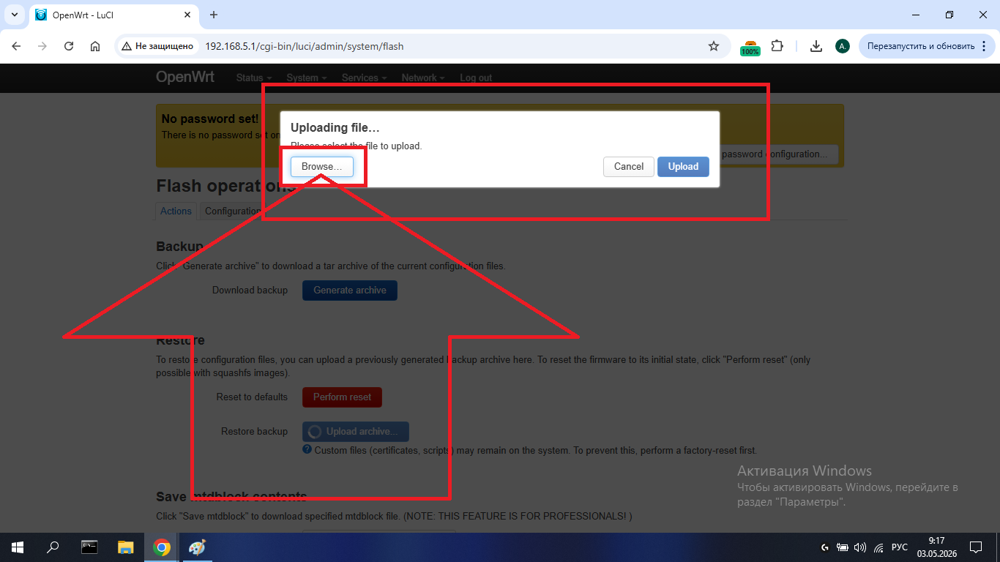

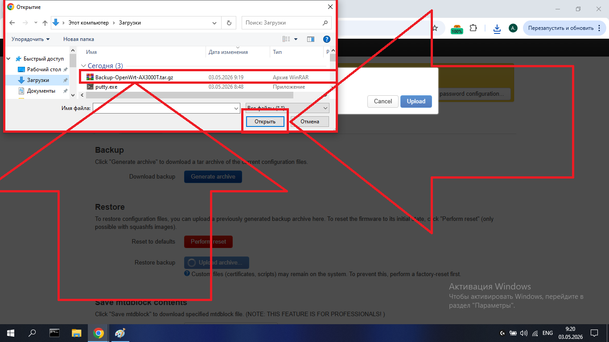

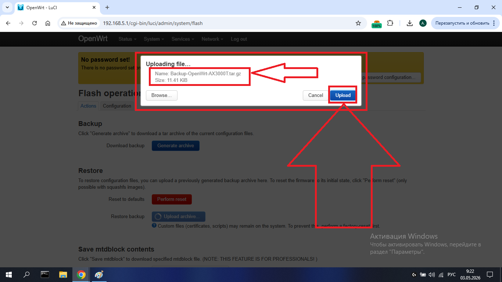

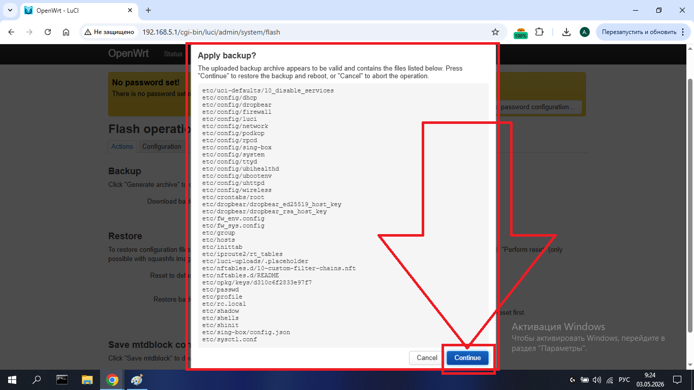
Автор предлагает ждать 3–5 минут и ориентироваться на синий индикатор. Если интерфейс после обновления выглядит прежним, очистите кэш или откройте приватное окно.
Сброс настроек
Сброс удаляет текущую конфигурацию. Перед ним сохраните нужные данные. Для обычного обновления списка серверов сначала используйте обновление.
Кнопкой на корпусе
- При включённом питании найдите Reset.
- Удерживайте кнопку 10–15 секунд, затем отпустите.
- Дождитесь перезапуска, после чего подключитесь к роутеру снова.
Через панель управления
Откройте System → Backup / Flash Firmware → Perform reset и подтвердите действие. Дождитесь загрузки устройства.
Для этой инструкции восстановление выполняется подходящим бекапом AX3000T и настройкой Podkop. Команды восстановления из другого руководства применяются только к соответствующей ему сборке.
🌐Установка роутера как основного
Этот раздел относится к интернет-соединению AX3000T с провайдером. Настраивайте обычный доступ в интернет до проверки маршрутизации Podkop; затем вернитесь к диагностике.
Если вы хотите установить купленный роутер как основной, прежде всего необходимо узнать у вашего провайдера интернета тип подключения и данные от него (при наличии). Вы можете это сделать позвонив провайдеру напрямую, либо задав соответствующий вопрос онлайн в службе поддержки или чат-боте. Ваш запрос может быть произвольным, например:
💬«Я приобрел(а) новый роутер и хочу его самостоятельно установить вместо старого. Назовите тип подключения и предоставьте по нему все необходимые данные.»
После того, как вы узнали данные — необходимо вставить интернет-кабель провайдера в WAN-порт приобретённого роутера. Убедитесь, что вы подключены к роутеру:

Убедитесь, что подключены к роутеру по Wi-Fi или кабелю
После подключения можно приступать к настройкам.
Существует огромное множество типов подключения к интернету, но наиболее распространены следующие три: PPPoE, По MAC-адресу и DHCP (автоматический). Также у провайдеров-операторов, например Билайн, подключение к интернету производится путём ввода логина и пароля на их специальном сайте (авторизация в личный кабинет). Важно: не путать данный тип подключения с PPPoE — о нём будет сказано ниже.
PPPoE
Для проведения настроек зайдите в веб-панель. Далее перейдите во вкладку сетевых настроек интерфейсов — Network → Interfaces:

Открываем Network → Interfaces
Здесь необходимо перейти в настройки WAN-интерфейса. Находим WAN-интерфейс (обычно второй по порядку) и нажимаем напротив него кнопку «Edit»:

Нажимаем Edit напротив WAN-интерфейса
Здесь мы видим параметр «Protocol» — его нам и необходимо поменять. Нажимаем на текущий протокол «DHCP» для открытия перечня протоколов: 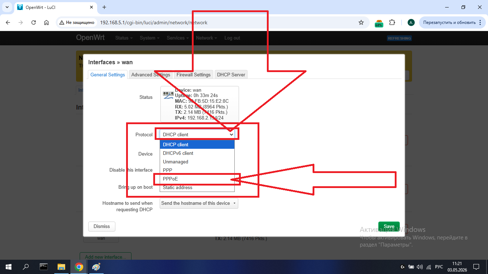

Нажимаем на DHCP для смены протокола
Выбираем протокол PPPoE и подтверждаем смену нажатием кнопки «Switch Protocol»:

Выбираем PPPoE и нажимаем Switch Protocol
После смены протокола необходимо заполнить данные подключения — логин («PAP/CHAP username») и пароль («PAP/CHAP password») в соответствующих полях:

Вводим логин и пароль PPPoE подключения
Убедитесь, что ввели данные правильно. После — сохраните настройки нажатием кнопки «Save»:

Нажимаем Save для сохранения
Мы видим, что наши изменения сохранились. Чтобы они применились и прописались на роутере, необходимо нажать кнопку «Save & Apply»: 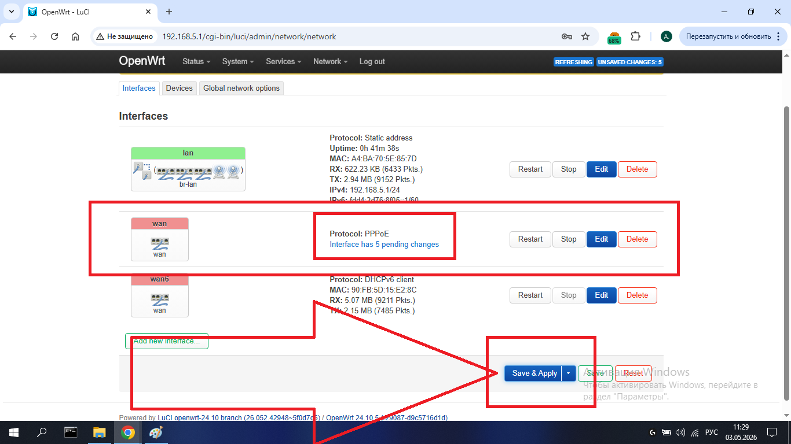

Нажимаем Save & Apply для применения настроек
После сохранения и применения настроек необходимо подождать, пока появится интернет-соединение — вплоть до 5–7 минут.
По MAC-адресу
Данный тип подключения осуществляется на основе индивидуального сетевого идентификатора вашего роутера — MAC-адреса. Для того чтобы поставить приобретённый роутер как основной при данном типе подключения, необходимо подключить интернет-кабель провайдера в WAN-порт роутера и позвонить или написать провайдеру (Поддержка / Чат-бот) с просьбой изменить MAC-адрес подключения к интернету, так как вы приобрели и установили новый роутер.
В большинстве случаев интернет-соединение после просьбы появляется в течение 5 минут. Никаких изменений настроек в самом роутере этот тип подключения НЕ ТРЕБУЕТ.
DHCP (автоматический)
Данный тип подключения является автоматическим и уже стоит при покупке роутера. В таком случае вам нет необходимости ничего настраивать на роутере — нужно лишь вставить интернет-кабель провайдера в WAN-порт.
Провайдеры-операторы (Билайн и подобные)
Данные операторы чаще всего предоставляют автоматический тип подключения — DHCP — то есть на самом роутере ничего настраивать не нужно, но они требуют авторизации на своём специализированном сайте. Страница авторизации открывается по предоставленному адресу, либо открывается сама при подключении интернет-кабеля провайдера в WAN-порт роутера.
Если страница авторизации не открывается:
- Необходимо сбросить настройки роутера (см. раздел «Сброс и восстановление»). После сброса страница авторизации должна открыться
- Если страница по-прежнему не открывается — проблема на стороне провайдера, обратитесь в их поддержку.
📡Изменение названия и пароля Wi-Fi сетей
Для того чтобы изменить название и пароль Wi-Fi сетей, необходимо войти в веб-панель. Далее перейдите во вкладку управления беспроводными сетями — Network → Wireless:

Открываем Network → Wireless
Открывается страница настроек беспроводных интерфейсов. Здесь видим две сети — OpenWrt и OpenWrt-5g. Для изменения настроек каждой из них необходимо нажать кнопку «Edit»:

Нажимаем Edit напротив нужной сети
Мы в окне изменения настроек Wi-Fi сети. Название сети задаётся в параметре ESSID — вместо стандартного OpenWrt можете вписать своё:

Параметр ESSID — вводим желаемое название сети
Для изменения пароля необходимо перейти во вкладку «Network Security» и в параметре «Key» вписать желаемый пароль:

Вкладка Network Security — вводим новый пароль в поле Key
После всех настроек Wi-Fi сети сохраните их нажатием кнопки «Save»:

Нажимаем Save для сохранения настроек сети
После внесения и сохранения всех необходимых настроек — примените их нажатием кнопки «Save & Apply»:

Нажимаем Save & Apply для применения настроек
🚨ВАЖНО! После применения настроек ваше устройство автоматически отключится от роутера — так как название и пароль сети изменились. В течение полутора минут найдите Wi-Fi сеть с новым названием и подключитесь к ней с новым паролем. Если не успеете — изменения сбросятся и настройки вернутся к прежним. Вам также высветится предупреждение о возврате настроек.
Если вы хотите применить настройки без проверки подключения — нажмите красную кнопку «Apply unchecked». В этом случае не нужно успевать подключаться в течение времени — настройки применяются сразу и навсегда:

Кнопка «Apply unchecked» — применить без проверки подключения
О руководстве
Материал изложен своими словами и дополнен общими настройками из вашего Google Документа. Особенности авторской сборки, изображения, адрес бекапа и команда обновления взяты из руководства perspekt1va. Поведение стандартного Podkop сверено с документацией проекта. Проверено 29 октября 2026 года.
Бекап и скрипт размещены у автора и могут обновляться независимо от этого сайта. Точная версия прошивки, состав подписки и доступность серверов определяются вашей установленной конфигурацией.